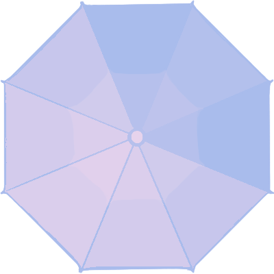

Thank you for your visit
雨の日の情景を描いたサイレント漫画のサイトです。 最近雨の日が多いですが、ネガティブな部分だけでなく、 雨の日にしか味わえない景色の魅力が伝わるようなグラフィック 作品を目指しました。タイトルの「Flowers on a Rainy Day」は傘のことで、傘の様々な色が 集まった時の華やかさに着目し、そこから構想を広げています。 スクロールしたときのぬるっとした動きや、フラットだけど奥行き のあるグラフィックを楽しんでもらえたら幸いです。
19144019 nakayama mariko